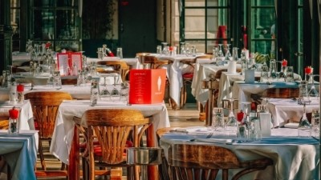

Zino's Italiano
Restaurant Description
Zino Di Landro first opened for business in 1981, serving traditional Italian food and wine to an ever increasing and loyal clientele who knew him for his genuine warmth and friendly nature. Today, Zino’s son, Daniel and his wife Martha continue to run the restaurant with the same spirit of conviviality that has made this a favourite destination for so many diners over the past thirty four years. We try to concentrate on providing the best quality food and wine in a warm, friendly atmosphere, where our guests are treated just the way Franco would have liked. Serving classic Mediterranean dishes served in a relaxed, traditional rustic restaurant open since 1981.